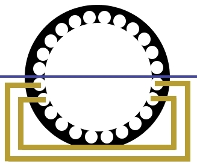
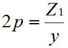
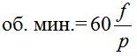

Перейти на главную страницу справочника.
Как определить мощность и обороты асинхронного электродвигателя по статорной обмотке.
- При поступлении в ремонт электродвигателя с отсутствующей табличкой, приходиться определять мощность и обороты по статорной обмотке. В первую очередь нужно определить обороты электродвигателя. Самый простой способ для определения оборотов в однослойной обмотке это посчитать количество катушек (катушечных групп).
| Количество катушек (катушечных групп) в обмотке шт. | Частота вращения об/мин. При частоте питающей сети f=50Гц. |
||
| Трёхфазные | Однофазные в рабочей обмотке |
||
| Односл. | Двухсл. | ||
| 6 | 6 | 2 | 3000 |
| 6 | 12 | 4 | 1500 |
| 9 | 18 | 6 | 1000 |
| 12 | 24 | 8 | 750 |
| 15 | 30 | 10 | 600 |
| 18 | 36 | 12 | 500 |
| 21 | 42 | 14 | 428 |
| 24 | 48 | 16 | 375 |
| 27 | 54 | 18 | 333 |
| 30 | 60 | 20 | 300 |
| 36 | 72 | 24 | 250 |
- По таблице у однослойных обмоток на 3000 и 1500 об/мин. одинаковое количество катушек по 6, визуально отличить их можно по шагу. Если от одной стороны катушки к другой стороне провести линию, и линия будет проходить через центр статора, то это обмотка 3000 об/мин. рисунок №1. У электродвигателей на 1500 оборотов шаг меньше.
Рис №1

- Определить обороты асинхронного электродвигателя можно по диаметральному шагу.
Если в двигателе концентрическая обмотка, преобразуйте ее в равнокатушечную для нахождения диаметрального шага и только после этого приступайте к расчету где 2p - число полюсов обмотки, Z1 - количество пазов статора, у - шаг обмотки по пазам.
При расчете количества полюсов двухслойной обмотки, полученный по формуле результат умножьте на 0,8. После нахождения числа полюсов производим расчет оборотов где f - частота питающей сети, p=2p/2.
| 2p | 2 | 4 | 6 | 8 | 10 | 12 |
| об/ мин f=50Гц | 3000 | 1500 | 1000 | 750 | 600 | 500 |
| 2p | 14 | 16 | 18 | 20 | 22 | 24 |
| об/ мин f=50Гц | 428 | 375 | 333 | 300 | 272 | 250 |
| 2p | 26 | 28 | 30 | 32 | 34 | 36 |
| об/ мин f=50Гц | 230 | 214 | 200 | 187,5 | 176,4 | 166,6 |
| 2p | 38 | 40 | 42 | 44 | 46 | 48 |
| об/ мин f=50Гц | 157,8 | 150 | 142,8 | 136,3 | 130,4 | 125 |
Как определить мощность асинхронного электродвигателя.
- Для определения мощности электродвигателя нужно измерить высоту оси вращения вала электродвигателя, наружный и внутренний диаметр сердечника, а так же длину сердечника двигателя и сравнить его с размерами электродвигателей единой серии 4А, АИР, А, АО...
- Увязка номинальных мощностей с установочными размерами асинхронных электродвигателей серии 4А: таблица №1, таблица №2.
{kind=link}
{kind=link}
18.02.2012 г.